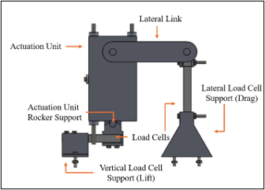
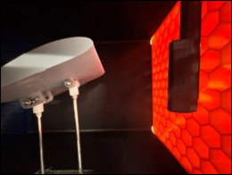
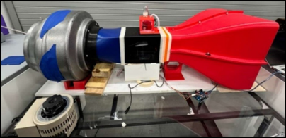
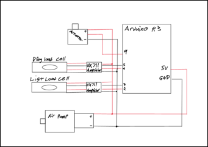
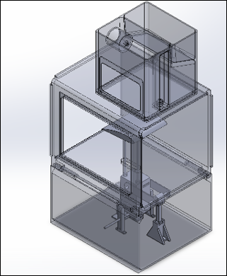
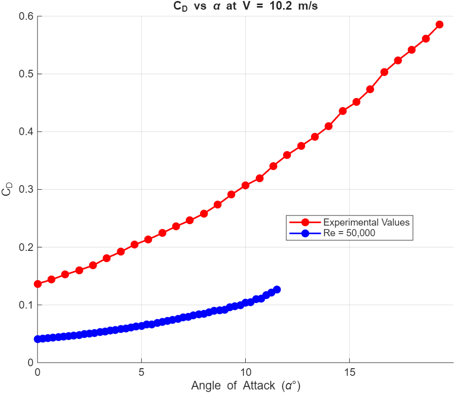

Goal: to design a measurement device capable of measuring the lift and drag of an airfoil inside of a wind tunnel as a function of the angle of attack.
Skills: Design, coding, CAD, manufacturing.
For one school project, I worked on a team designing and creating an attachment for an existing wind tunnel. This custom-made attachment contained an airfoil that was configured in such a way that a pair of load cells could measure the lift and drag force that it experienced. The airfoil’s angle of attack could be changed by use of a servo, allowing us to dynamically see how the angle affected the aerodynamic forces that it experienced. This data would be used to calculate the Coefficient of Drag and the Coefficient of Lift. As an additional challenge, our team built an integrated fog generator into the wind tunnel attachment. The fog was distributed along multiple smoke-wires, simultaneously visualizing the airflow and providing a visual indicator as to whether or not the flow was laminar or turbulent.

The largest hurdle our team faced was creating the lift and drag force measurement system, as the design requirements were very tricky. The system had to hold the airfoil with a support system that did not introduce significant drag into the system. The measurements from each load cell had to be completely independent: exciting the lift load cell could not alter the measurements of the drag load cell at all. On top of all this, the measurement system had to account for the presence of a servo that could alter the angle of the airfoil at will. After brainstorming multiple different design possibilities, creating numerous free body diagrams, and conducting rigorous background research on this problem, we finally found a design that fit these requirements. We used a pair of thin, metal rods that would support the airfoil with the smallest possible profile to minimize drag. The rods were connected to a box containing a servo and a rack-and-pinion system capable of altering the angle of attacking. This box was attached to a pair of load cells set up so that each direction of motion was completely decoupled from the other, allowing lift and drag to be measured independently.


Our team’s first fog generator design used a heating element inside of a container that held “fog juice,” a mixture of water and glycerin. However, we eventually decided that having a heating element was a safety risk, especially given that much of our design was 3D printed. If components started to melt, water leakage could damage the electrical components in the system. Taking inspiration from essential oil diffusers, our team eventually decided to use an ultrasonic atomizer that could generate fog from water. This device, when submerged, vibrates at high frequencies, forcing water through a small mesh, creating a fine mist. Crucially, the ultrasonic atomizer does not rely on a heating element, making this the safer choice. This atomizer was placed inside an airtight container connected to a small air pump and tubing that distributed the fog. Thus, the fog generator was complete.

An Arduino R3 was coded to control the airfoil’s angle of attack and to collect the lift and drag data. The code looped through a sequence of modifying the angle of the servo, waiting for the airfoil to stabilize, and recording the output of the two load cells. Each load cell was connected to an HX711 Amplifier, which were connected to the Arduino. The Arduino also provided power for the air pump in the fog generator.

After all the components were designed, we used SolidWorks to model the assembly. Many of the components had to be 3D printed. Once printed, they were secured together with bolts.


The lift and drag forces experienced by the airfoil were collected from the system and imported into MATLAB. The lift and drag coefficients could be calculated by means of a simple pair of formulas:
$$ C_L = \frac{2F_L }{\rho V^2 A} $$
$$ C_D = \frac{2F_D }{\rho V^2 A} $$
In both formulas, C is the coefficient of lift/drag, F is the lift/drag force, V is the velocity of air, the Greek letter rho is the density of air, and A is the area of the airfoil. All of this data was known to our team, all that was left was to crunch the numbers. But how to verify our data? During our research, we found a database of different types of airfoils and how they performed at different Reynolds numbers [1]. Our airfoil is based after a NACA 4415 airfoil. The Reynolds number of our simulation could be calculated with the following formula:
$$ Re = \frac{\rho v l}{\mu} $$
Where rho, v, l, and mu are the air density, air velocity, characteristic length of the airfoil, and dynamic viscosity respectively. After this was calculated, our calculated values were compared to the theoretical values from the online database. The data in blue were the values from the database, and the values and red were the values calculated by our team.



From viewing the above graphs, it is clearly apparent that the coefficient of drag was significantly off from the expected value. This is likely due to the fact that during the supply procurement process, one of our load cells had to be substituted with another load cell with a much higher sensitivity than our team desired, likely overloading the load cell with greater forces than it could accurately measure, leading to poor measurements. Regardless, the measured values generally follow the same trends that the theoretical values follow. Especially interesting of note is the third graph, where it can be seen that the ratio of the Coefficient of Drag and the Coefficient of Lift are maximized at the same angle of attack.
What is the significance of all this? Firstly, when designing aircraft, it is important to recognize the effect that the angle of attack will have on both the lift and drag of the system. A higher angle will increase the lift experienced, but it will also increase the drag. However, through experimentation, the optimal angle can be found. This project was also an important lesson in the importance of accounting for the sensitivity of your measuring equipment, as the right tool for the wrong job cannot help you.
[1] “NACA 4415,” Airfoil Tools. Accessed: May 04, 2026. [Online]. Available: http://airfoiltools.com/airfoil/details?airfoil=naca4415-il